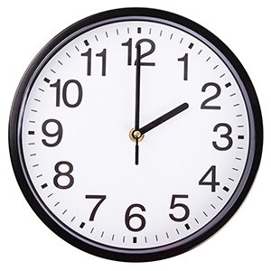

Проєкти — це «коробки» для завдань: курс, диплом, хобі чи робота.
Так легше бачити, скільки навантаження на кожен напрям, і не губити дрібні кроки.
Нижче — розділи сайту й приклад тижневого циклу здачі роботи.
| Головна | Завдання | Календар | GitHub |
|---|---|---|---|
 |
|||
| Головна | Завдання | Календар | GitHub |
| Вхід і меню по сайту | Список справ і нотатки | Дедлайни та події | Віддалений репозиторій коду |
Приклад циклу підготовки до здачі:
| Два робочі тижні | Один спільний дедлайн | Нагадування в календарі | |
| Чернетка | Перевірка | Здача | |
| Пн | Вт | Ср | Пт — відправити |